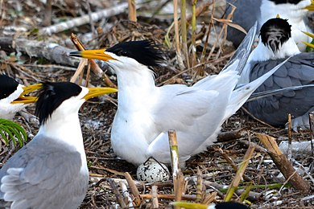
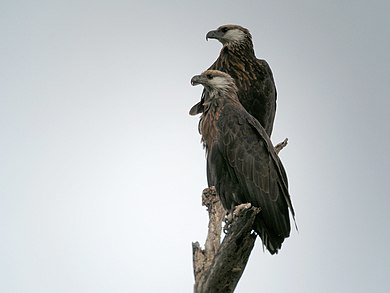
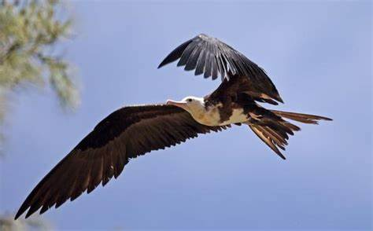
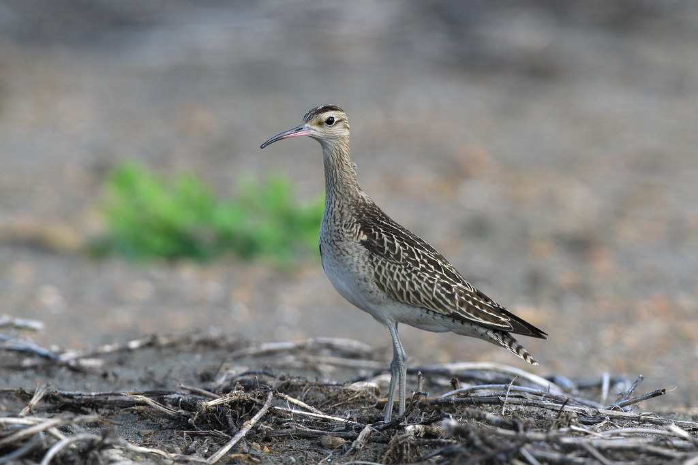

|  |
黑嘴端鳳頭燕鷗 黑嘴端鳳頭燕鷗（學名：Thalasseus bernsteini） ，也稱作中華鳳頭燕鷗或黑嘴鳳頭燕鷗，是燕鷗科的一種海鳥。體長約 38 公分，羽色為淺灰色，具醒目的黑色鳳頭，繁殖期頭頂亦為黑色。喙部黃色而先端三分之一為黑色，最尖端部分為白色，因此有黑嘴端鳳頭燕鷗的名稱。尾羽開叉而似燕尾。 |
|  |
馬達加斯加海雕 馬達加斯加海雕（學名：Haliaeetus vociferoides），為屬於鷹科的猛禽，以獵食魚類為生。其身形在海雕裡屬中等，長七十餘厘米，翼幅約二百厘米。身體及雙翅均為深棕色，頭部為黃褐色，尾部為白色，嘴部為黑色，尤以尖處為甚，而腳部則為淺灰色。此鳥為馬達加斯加之本土鳥，然而現今之存活量極少，在二十世紀九十年代初，於一百零五個統計地裡，只找到二百二十二隻成年者，其中僅九十九對為正在繁殖的配偶（註：野生鳥類的數量很難統計，因為鳥類會在天空四處遨翔，故吾人常以在繁殖的配偶之數量來表示，此即英文之breeding pairs），故已被列為極危物種。 |
|  |
白腹軍艦鳥 白腹軍艦鳥（學名：Fregata andrewsi）是一種熱帶大型海鳥，屬於軍艦鳥科。捕食水面和淺灘中的魚類；經常搶奪其他海鳥所捕獲的魚，故又被稱為「海盜鳥」。白腹軍艦鳥身長89–100厘米（35–39英寸），翼展為205–230厘米（81–91英寸），重約1,550克（3.42磅）。喙長而尖端彎曲，腳趾間有蹼（蹼膜有很深的缺口），翅膀比較長而狹窄，尾部猶如深叉的形狀。背部黑色。腹部白色。雄性鳥的嘴是暗灰色；雌性鳥的嘴則是紅色。 |
|  |
細嘴杓鷸 細嘴杓鷸（Numenius tenuirostris）是一種瀕危的杓鷸。牠們在西伯利亞針葉林內的沼澤及泥炭沼澤繁殖，且是候鳥，會遷徙至地中海的淡水環境過冬。細嘴杓鷸是中等身形的杓鷸，長36-41厘米。翼展長77-88厘米。牠們的大小如中杓鷸，但羽毛卻較像白腰杓鷸。繁殖時的成鳥上身呈灰褐色，下背部及臀部呈白色。下身呈白色，有深褐色的斑紋。兩側有圓形或心形的斑點。成鳥平時的羽毛相似，但兩側有較小斑點。雄鳥及雌鳥相似，但雌鳥的喙較長，目的是避免雄鳥及雌鳥爭奪食物。雛鳥的羽毛像成鳥，但兩側有褐色的斑紋，心形的斑點只在第一年的冬天才出現。 |